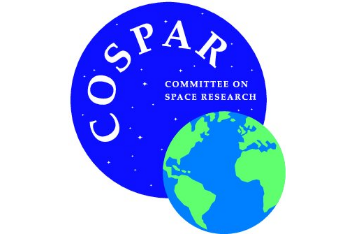
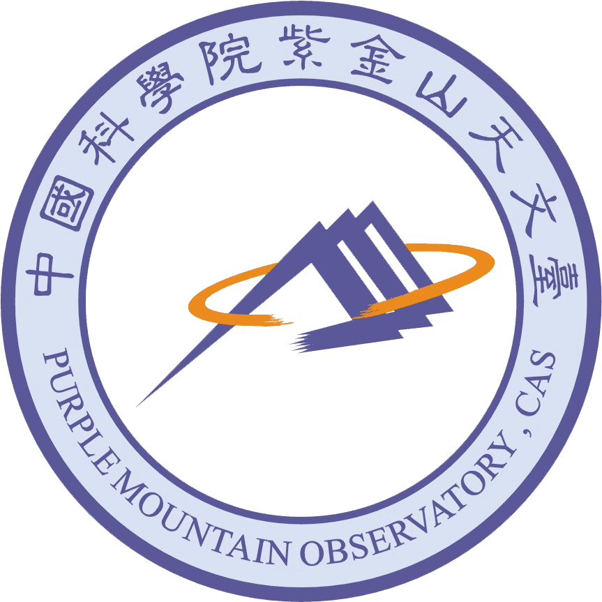
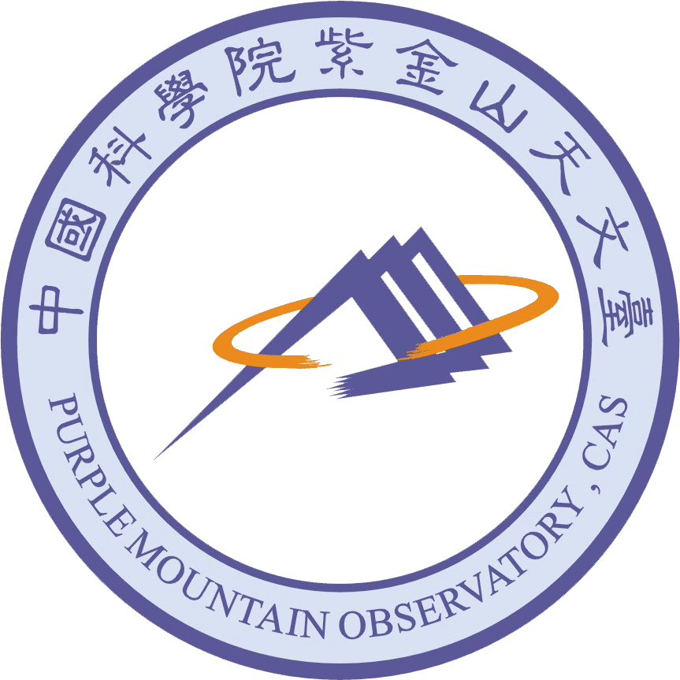

Sponsors
 

Warm and hot astrophysical plasmas are ubiquitous in the Universe, e.g. stellar coronae,
hot gas in supernova remnants, ionized outflows running away from black holes,
hot atmosphere of individual galaxies and galaxy assemblies, and warm-hot intergalactic medium in the cosmic web filaments.
Characteristic emission and absorption spectral features in high-resolution X-ray spectroscopy provide powerful diagnostics to quantify the physical properties of the ionized plasmas, including temperature, density, abundance, kinematics, etc.
These physical properties are essential to advance our knowledge of the formation and evolution of the Universe.
In the past few decades, high-resolution X-ray spectra have been sourced from the grating spectrometers aboard Chandra and XMM-Newton.
In the next decade, we will enter a golden era for high-resolution X-ray spectroscopy, when most of the next-generation X-ray space observatories will have high-resolution spectrometers aboard,
such as XRISM/Resolve, Athena/X-IFU, and proposed missions like HUBS, Arcus, LEM, etc.
All these missions will provide a large number of high-resolution X-ray spectra.
The main goal of this I-HOW/COSPAR workshop is to facilitate the learning of high-resolution X-ray spectroscopy
for early-career scientists in the Asia-Pacific countries. We will invite experts to teach
We will provide hands-on exercises for the learners.
For any queries and information please contact us via email at: hr_xrayspectroscopy_2024@outlook.com